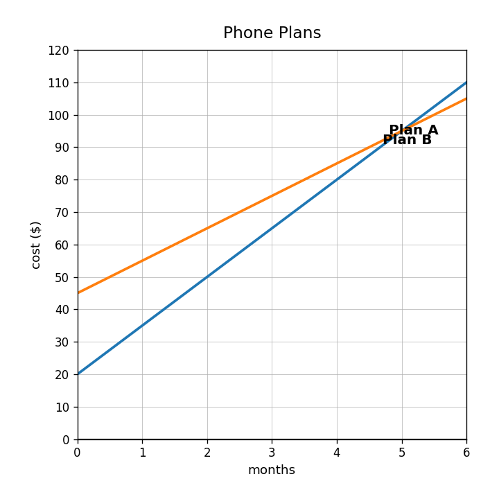
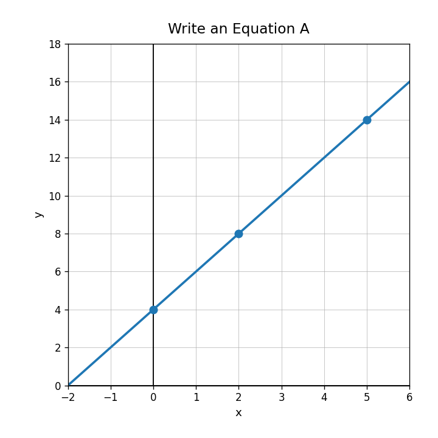

Which equation has the greater rate of change: $y=4x+10$ or $y=7x+1$? Explain how you know.
Which relationship starts higher: $A=3x+12$ or $B=5x+4$? What number tells you?
Compare the table to the equation $y=3x+6$. Which relationship has the greater rate of change?
| $x$ | 0 | 1 | 2 | 3 |
|---|---|---|---|---|
| Table A | 10 | 15 | 20 | 25 |
Use the graph. Which phone plan starts with the lower cost, and which increases faster?

In $y=6x+12$, identify the slope and the $y$-intercept.
Use the graph to write the equation of the line.

A gym charges $18 to join and $9 per month. Which model fits: $C=18m+9$ or $C=9m+18$?
From the table, identify the starting value.
| weeks | 0 | 1 | 2 | 3 |
|---|---|---|---|---|
| dollars | 25 | 32 | 39 | 46 |
Write an equation for the relationship shown in the table.
| $x$ | 0 | 2 | 4 | 6 |
|---|---|---|---|---|
| $y$ | 5 | 13 | 21 | 29 |
A delivery service charges $6 to start and $4 per mile. Write an equation for total cost $C$ after $m$ miles.
For $P=12t+40$, explain two possible meanings for the 12 and 40 in a real situation.
Create a table, equation, and context that all have starting value 8 and rate of change 3.
Identify the coefficient in the expression $9x+14$.
Simplify: $$6x+3x$$
Determine whether $4(x+5)$ and $4x+20$ are equivalent. Explain briefly.
Rewrite $7x+21$ by factoring out the greatest common factor.